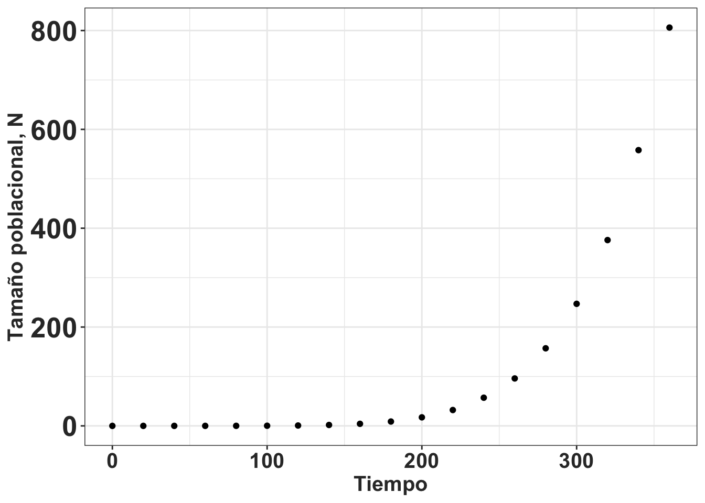
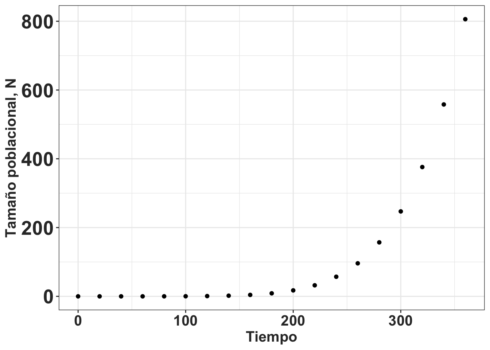

ggplot(pressure, aes(temperature, pressure))+
geom_point()+
rlt_theme+
xlab("Tiempo")+
ylab("Tamaño poblacional, N")
https://docs.github.com/en/repositories/archiving-a-github-repository/referencing-and-citing-content
https://guides.github.com/activities/citable-code/
https://docs.github.com/en/repositories/managing-your-repositorys-settings-and-features/customizing-your-repository/licensing-a-repository
https://www.google.com/search?q=how+to+add+a+license+to+a+github+repo&rlz=1C5CHFA_enPR884PR887&oq=how+to+add+a+license+to+&gs_lcrp=EgZjaHJvbWUqDAgBEAAYFBiHAhiABDIGCAAQRRg5MgwIARAAGBQYhwIYgAQyBwgCEAAYgAQyBwgDEAAYgAQyBwgEEAAYgAQyBwgFEAAYgAQyBwgGEAAYgAQyBwgHEAAYgAQyBwgIEAAYgAQyBwgJEAAYgATSAQkxNjQ2N2owajeoAgCwAgA&sourceid=chrome&ie=UTF-8
Por: Por RLT, Ernesto Mujica, Joel Tupac Otero, Nhora Ospina, Demetria y …..
El objetivo de la conservación biológica es asegurar que las especies puedan sobrevivir, reproducirse y dejar progenie viable de una generación a otra. En consecuencia, se necesita que las variables intrínsecas y extrínsecas, bióticas y abióticas de cada especie estén consideradas con todas sus interacciones. Naturalmente, aunque el concepto es sencillo, tener en cuenta TODAS las posibles interacciones biológicas y abióticas es imposible. Por lo tanto, uno tiene que simplificar el problema y tratar de identificar y considerar las interacciones más importantes. El reto es poder construir modelos que sean lo suficientemente simples para ser entendido y lo suficientemente complejo para capturar los procesos más importantes de la dinámica de una población/especie.
El primer paso en la conservación es considerar el ambiente adecuado para cada especie. Sin duda, en los últimos 50 años, en muchos países ha habido un cambio significativo respecto a la conservación de bosques, praderas, desiertos y todos los biomas en general. Por ejemplo, el cambio de la cobertura boscosa en Puerto Rico ha aumentado de cerca de 2-5% en los años 1910 a más de 40% en el 2000 (Parés-Ramos, Gould, and Aide 2008; Gould et al. 2017). En general en Latino América ha habido más reforestación que deforestación (Aide et al. 2013) en los últimos años, aunque varía mucho entre países, hábitats y periodos de tiempo. Para la conservación biológica el primer paso es reconocer que los hábitats necesitan ser protegidos.
La actividad humana ha generado hábitats completamente nuevos que han sido influenciados por la modificación de los ecosistemas naturales, la introducción de especies exóticas, la contaminación ambiental y el cambio climático (REF). Muchos de estos nuevos hábitats son bosques secundarios, fragmentados y dominados por especies introducidas. Estos hábitats por consecuencia, son muy diferentes al ambiente natural antes de los cambios antropogénicos. El resultado, en muchas ocasiones, es que las especies de interés están reducidas en el número de individuos o que presentan patrones de distribución fragmentados. Pero, ¿ esos remanentes de individuos en el hábitat, son suficientes para mantener una población viable? ¿Cómo podemos afirmar que una población es viable?
En general, el concepto de conservación es que, si uno protege los hábitats, las especies estarán conservadas. Pero, no se puede asegurar que la presencia de individuos en un sitio protegido o donde que haya muchos individuos es suficiente para garantizar la supervivencia de una especie a largo plazo. Un ejemplo bien conocido es la extinción del Dodo (Raphus cucullatus), un ave de la isla de Mauritius, y su estrecha relación biótica con una especie de árbol en la familia Sapotaceae, Calvaria major que casi llega también a la extinción. Aunque el último Dodo vivio en 1681, Calvaria major todavía sobrevive. Stanley Temple desmostó que el reclutamiento de esa especie arborea dependía del Dodo (Temple 1977). Para que las semillas viables puedan germinar, necesitan pasar por el tracto digestivo de un ave para remover el endocarpo persistente que causa latencia (“dormancy”) en las semillas (Temple 1977). En consecuencia, nunca se puede asumir la sobrevivencia a futuro de una especies sin tomar en cuenta sus interacciones bióticas y abióticas. En este caso más de 300 años después de la extinción del Dodo, la especie de árbol todavía sobrevive, pero en un estado muy vulnerable.
La dinámica poblacional tiene como meta tomar en cuenta todas las etapas/edades de las especies e interacciones y evaluar cuál de estas etapas/edades tiene relativamente más impacto sobre la supervivencia de la especie. Para conocer cuáles de estas etapas/edades se pudiese modificar para cambiar el crecimiento de las poblaciones estudiadas se deberían considerar las interacciones con sus ambiente biótico y abiótico. La dinámica de población es fundamental en todas las áreas de la ecología y evolución. Comprender la dinámica poblacional es la clave para entender la importancia relativa que tiene el acceso a los recursos y el efecto de competencia, herbivoría y depredacion sobre la viabilidad de especies y la persistencia de la población. Tradicionalmente los estudios estaban enfocados a evaluar tablas de vida para el manejo, la fenología y conservaciones de especies particulares (Harper et al. 1977). Sin duda John L. Harper fue uno de los pioneros de la ecología vegetal y ha dejado una diversidad de publicaciones y temas amplios (Sagar 1985). En años más recientes los estudios se han diversificado para evaluar las interacciones entre las especies y su ambiente (Caswell 2001; Bacaër 2011).
La definición más específica de los estudios de dinámica poblacional debe ser entendido como los análisis de los factores que afecten el crecimiento, estabilidad y reducción en el tamaño de la población en una serie de tiempo. Por ejemplo, la dinámica poblacional de especies invasivas incluye un periodo de crecimiento muy lento al comienzo de la colonización de un nuevo sitio que frecuentemente es seguido de un crecimiento logarítmico y posteriormente de una reducción en crecimiento poblacional. La figura (ref?)(fig:Pop-fig_1) demuestra el cambio de número de individuos en el tiempo de una especie invasiva hipotética. Lo importante es que la dinámica poblacional es una herramienta para evaluar el impacto de diferentes factores sobre el crecimiento poblacional y de su viabilidad.
ggplot(pressure, aes(temperature, pressure))+
geom_point()+
rlt_theme+
xlab("Tiempo")+
ylab("Tamaño poblacional, N")
Los primeros estudios poblacionales se enfocaron en contar cuántos individuos de varias especies hay en un sitio y el impacto de varios tipos de efecto antropogénico o de especies invasivas (Crawley 1990). Crawley (Crawley 1990) indica que los primeros estudios publicados de conteo de números de individuos en plantas son de Carr (1848) y Burdon (1856) ambos fueron presidente de la “Tyneside Natural History Society” en Inglaterra. En la publicación de Burdon se menciona individuos de Cypripedium calceolus en el Castle Eden Dene en el County de Durham hasta la perdida completa de todos los individuos de C. calceolus en el sitio en 1850 (extraido de la publicación de Michael J. Crawley (Crawley 1990)). Evaluando la publicación original desafortunadamente no se menciona la cantidad de individuos en el sitio (Baker and Tate 1867).
Otro de los estudios pioneros en la dinámica de población fue establecido por V. M. Spalding en 1906 en el Carnegie Institute Desert Laboratory para contabilizar la cantidad de individuos del cactus de Saguaro, Carnegiea gigantea, y así evaluar el efecto en la reducción del cactus y el aumento de la especie invasiva Prosopis glandulosa y la correlación con aumento en la ganadería en el área.
En la revisión de literatura de Crawley (Crawley 1990) sobre la dinámica de poblaciones de plantas, él menciona siete componentes de la biología de plantas que parecen ser consistentes.
• El tamaño de las plantas es una característica plástica, por consecuencia el tamaño no es un buen indicador de la edad de la planta y las correlaciones entre el tamaño y la edad varían entre especies (Gatsuk et al. 1980; Roux and McGeoch 2004; Vanderklein et al. 2007; Baden et al. 2021). • Debido a que las plantas son sedentarias, la interacción con sus vecinos más inmediato es importante. Adicionalmente, la cantidad de individuos que rodea una planta impacta su crecimiento, reproducción y supervivencia [Mitchell-Olds (1987); Pantone, Baker, and Jordan (1992); postma2021dividing]. En la revisión de literatura de Postma (Postma et al. 2021) donde se evalúan 334 experimentos en un meta-análisis de como la biomasa de la plantas y las característica fenotípicas cambian. Se observa que al aumentar la densidad, el tamaño de la plantas se reduce con el números de tallos y ramas, pero la altura de las plantas no es afectada. • Los cambios sucesionales en la estructura poblacional (en tiempo) son la regla y no la excepción (Young, Ewel, and Brown 1987; Peña-Domene, Martı́nez-Garza, and Howe 2013). Por consiguiente, el reclutamiento o la supervivencia en una parcela específica puede ser muy variable en el tiempo y espacio (Acácio et al. 2007) incluyendo variables biótica y abióticas (Luzuriaga and Escudero 2008). • El reclutamiento puede ser infrecuente, impredecible y variable en el tiempo. En adición, como muchas especies produce bancos de semillas, el reclutamiento pudiese ser de semillas que han estado en el banco de semillas por muchos años (Saatkamp, Poschlod, and Venable 2014; Fenner 2017; Tomowski et al. 2023) y el reclutamiento pudiese ser de un conjunto de semillas de diferentes años o cohortes. • La competencia entre individuos de la misma especie de plantas o entre especies distintas es importante y asimétrica. Típicamente las plantas grandes pueden afectar a las plantas pequeñas en su entorno, y raramente al revés. Las interacciones de competencia a niveles intraespecífico (Weiner and Thomas 1986; Connolly and Wayne 1996; Weiner et al. 2001) o interespecífica (Freckleton and Watkinson 2001) son comunes. • La mortalidad es altamente relacionada al tamaño de la planta y mayormente observada en las etapas/tamaños más pequeños comparando diferentes especies (Moles and Westoby 2006) y también a nivel intraespecífico (Fricke, Tewksbury, and Rogers 2019). • La mortandad de individuos grandes, viejos, por accidentes, herbivoría o enfermedades puede abrir una oportunidad de reclutamiento [wright2003gap].
Determinar el tamaño poblacional en el futuro tiene muchos usos. Se pueden dividir sus usos en tres grupos grandes, entender las 1) interacciones ecológicas, 2) manejo y conservación o 3) los procesos evolutivos. Los estudios enfocados a la conservación se engloban dentro de un acercamiento de la viabilidad de poblaciones. En este libro estaremos dando una introducción a cada una de estas vertientes, pero nuestros ejemplos son una introducción al tema y no una profundización extensa de cada uno. En la table (ref?)(USO) vemos algunos de los usos específicos que se han dado con la metodología de matriz de proyección poblacional MPP. La lista de como se ha usado los análisis de MPP proviene en parte de las ideas de Morris and Doak (Morris, Doak, et al. 2002) y expandido.
NOTA IMPORTANTE: Evaluar las referencias y añadir referencias tradicionales y recientes
| Categoría de Uso | Uso especifico | Referencias generales | Referencias con Orquídeas |
|---|---|---|---|
| Manejo | Identificar las etapas o procesos demográficos claves | (Crouse, Crowder, and Caswell 1987) | (Shefferson et al. 2003; Kéry and Gregg 2004; Zotz and Schmidt 2006; Zhongjian et al. 2008; R. Tremblay et al. 2009a, 2009b) |
| Determinar cuántos individuos en una población son necesarios para reducir la extinción | (Shaffer 1981; Armbruster and Lande 1993) | ? | |
| Determinar cuántos individuos se necesita introducir en una sitio para establecer una población viable | (Bustamante 1996) | ? | |
| Determinar cuántos individuos se puede extraer sin tener un impacto negativo sobre la viabilidad de una población | (Nantel, Gagnon, and Nault 1996) | (Emeterio-Lara et al. 2021) | |
| En especies invasivas determinar cuántos y cual etapas se necesita remover para controlar la población | (Arroyo-Cosultchi et al. 2022) | ? | |
| Determinar cuántas poblaciones se necesita para lograr la viabilidad de una especie al nivel local o global | (Lindenmayer and Possingham 1996) | (R. L. Tremblay, Meléndez-Ackerman, and Kapan 2006; Lind et al. 2007; Winkler, Hülber, and Hietz 2009; Garcı́a, Goni, and Guzmán 2010; Kindlmann, Meléndez-Ackerman, and Tremblay 2014) | |
| Evaluación de riesgos | Evaluar el riesgo de una población | (Gotelli and Ellison 2006) | (Nicolè, Brzosko, and TILL-BOTTRAUD 2005; Iriondo Alegria et al. 2009; Hutchings 2010; Thorpe et al. 2011; Raventós et al. 2015; Hens et al. 2017; Ackerman et al. 2020; Berry and Cleavitt 2021; Timsina et al. 2021) |
| Compar el riesgo relativo de dos o más poblaciones o especies | (Earl 2019) | (Raventós et al. 2018; Schödelbauerová, Tremblay, and Kindlmann 2010; Crain, Tremblay, and Ferguson 2019) | |
| Interacciones ecológicas | Evaluar interacciones ecológicas abiótica y biótica para entender las variables importantes para la supervivencia de una población | (Halpern and Underwood 2006) | (Coates, Lunt, and Tremblay 2006; Sletvold, Øien, and Moen 2010; Sletvold et al. 2013; Ospina-Calderón et al. 2023) |
| Procesos y patrones evolutivos | Cuál de los procesos, interacciones y patrones evolutivos del ciclo de vida de las especies impacta en su crecimiento | (Coste and Pavard 2020) | (Calvo 1993; Jäkäläniemi et al. 2011; Shefferson et al. 2012; Falcón, Ackerman, and Tremblay 2017) |
| Metodología | Identificación de metodología adecuada por diferentes tipos de muestreos o historia de vida | ? | (Gregg and Kéry 2006; Kéry and Gregg 2004; R. Tremblay et al. 2009a; Shefferson, Warren, and Pulliam 2014; R. L. Tremblay and McCarthy 2014; R. L. Tremblay et al. 2021) |
Identificar y conocer cuáles son las etapas de vida más susceptibles y relacionadas a cambios tanto bióticos como abióticos, y su impacto sobre la persistencia de una población . El ejemplo clásico en la literatura usando PPM son los trabajos sobre la dinámica poblacional de la tortuga “boba” o “cabezona” Caretta caretta (Crouse, Crowder, and Caswell 1987), (Crowder et al. 1994). Crouse y Crowder demostraron que, aun salvando TODOS los huevos de la depredación, esa estrategia de manejo antropogénico iba a tener muy poco impacto en el crecimiento de la población. Lo que encontraron es que el impacto más grande sobre el crecimiento poblacional provendría de proteger los adultos, o sea, reducir la mortandad de los adultos específicamente de las redes de pesca, modificando estas redes para que las tortugas se puedan escapar sin ahogarse en las redes. Los trabajos de Crouse y Crowder (Crouse, Crowder, and Caswell 1987), (Crowder et al. 1994) fueron pioneros en demostrar que uno podía simular diferentes escenarios con base en la historia de vida del organismo estudiado y evaluar su impacto. Naturalmente, eso no quiso decir que no se debería proteger los huevos, pero que el impacto de proteger los huevos era menor que proteger los adultos.
En el caso de los estudios de dinámica poblacional que se realizaron en Cuba con tres especies epífitas (Cattleyopsis cubensis, Dendrophylax lindenii y Encyclia bocourtii) hace ya casi 20 años, se demostró que la protección de los individuos adultos es esencial para mantener un equilibrio en la población (REF). Esto ocurre por el valor reproductivo de los individuos más grandes ya que poseen una capacidad de reemplazar a los individuos menores que causan baja en la población porque tienen mayor probabilidad de morir (Raventós et al. 2021). Entre los principales peligros que enfrentan estas tres especies está en primer lugar la incidencia de los huracanes, la mortandad de las principales especies que funcionan como forófitos y en menor medida la depredación.
El efecto del tamaño poblacional sobre la biología y la probabilidad de extinción de las poblaciones naturales es bien conocido (Shaffer and Samson 1985; Nunney and Campbell 1993; Harris et al. 2022). ¿Cual es la probabilidad de extinción de una población considerando la cantidad de individuos en cada etapa? En general lo que se observa es que a menor tamaño poblacional, N, mayor es el riesgo de extinción. Esa correlación de extinción con el tamaño de muestra puede variar si algunas etapas del ciclo de vida son reducidas. También hay variación si la probabilidad de sobrevivir de alguna etapa del ciclo de vida o si la probabilidad de crecer a la próxima etapa es muy baja . En orquídeas es conocido que una de las etapas más vulnerable es la etapa de semilla ya que en condiciones naturales depende del establecimiento de una interacción micorrícica específica. Por ejemplo, ¿cuál es la probabilidad de que las semillas se establezcan en un sitio apropiado donde este su hongo especifico, puedan germinar y que cuenten con las condiciones ambientales para que crezcan y puedan llegar a ser un juvenil? Esas transiciones son muy pequeñas (poco frecuentes). Por consiguiente, una nueva población de orquídea necesita considerar la cantidad de individuos que esté presente pero también la probabilidad de tener semillas y que estas pueden llegar a ser adultos reproductores. Darwin (Darwin 1877) estimó que un fruto de Orchis maculata produce 6,200 semillas y una planta pudiese tener 30 capsula produciendo 186,300 semillas y en un acre la suma de las plantas produce más de 32,400,000,000 semillas!!!! Sin duda la probabilidad de que una semilla germine y produzca una planta es muy pequeña sino estaríamos cubiertos de orquídeas en dos generaciones.
Naturalmente, a mayor cantidad de individuos reintroducidos en un sitio, mayor será la probabilidad de que la población sea viable. Asumiendo que los individuos fueron establecidos en un área donde todas las etapas pueden sobrevivir, crecer y reproducirse. Pero, como todo, hay un límite de tiempo y esfuerzo disponible. Por lo tanto, la pregunta debería ser orientada a determinar cuál es el mínimo de individuos que se deberían introducir para garantizar un x porciento de suceso en el establecimiento de una nueva población.
En los últimos años, muchas organizaciones y científicos han comenzado a hacer reintroducciones de especies en su hábitat nativo y no. (ref) incluyendo algunos programas que introducen especies en áreas urbanas.
En Corea, dos trabajos demuestran que la reintroducción de orquídeas en un sitio puede ser parcialmente exitoso. Los autores translocarón la orquídea Thrixspermum japonicum en la isla de Jeju donde la cantidad de individuos entes de la relocalización era cerca de 50 y solamente un individuo produjo frutos, de allí propagaron plántulas que fueron translocadas en la isla. De los 216 individuos, 73% sobrevivieron el primer año y 63% el segundo año. De estos individuos 16% a 35% produjeron frutos en los dos años siguientes (Kim, Kang, and Kim 2016). En otro estudio en Corea, en un trabajo masivo de reintroducción de la orquídea Dendrobium moniliforme en la isla de Bogildo, Corea, más de 13,000 individuos artificialmente propagado fueron reintroducido en su ambiente natural y seguido por múltiples años. Los autores demostraron que el sitio de localización es una variable importante para el crecimiento de los individuos. Las áreas abiertas con luz solar directa tuvieron un crecimiento más rápido que las áreas con sombra. Adicionalmente encontraron que la especie de árbol tiene un impacto significativo en el crecimiento (Kim, Kang, and Kim 2016).
Desafortunadamente ninguno de los trabajos de Orquídeas mencionado arriba utilizan los métodos de PPM para evaluar el tamaño de reintroducción sobre el impacto de la supervivencia de orquídeas en un sitio y cuántos individuos se debería relocalizar en su ambiente natural para establecer una población viable. En general, la reintroducción de orquídeas es un tema que necesita más investigaciones y evaluaciones. Por ejemplo, esos trabajos no toman en cuenta la probabilidad de que las semillas germinen y crezcan y que las plantas lleguen a ser adultas. En consecuencia, la cantidad de individuos que se debería reintroducir en un sitio es desconocido. Un ejemplo de la complejidad de germinación in situ y la necesidad de evaluar la viabilidad de reintroducción de orquídeas es el trabajo de Zoe Fae Smith (Smith 2006) en su tesis doctoral en Diuris fragrantissima y D. punctata en Autralia donde se evaluó la germinación de semillas en el campo usando 640 mallas (vea método por [Rasmussen and Whigham 1993]). Ni una semilas de estas dos especies germinaron en el campo.
En otro estudio, Zettler y colaboradores (Zettler and McInnis 1993) evaluaron la germinación de semillas de Goodyera pubescens en un sitio de reintroducción en el estado de Illinois, USA. Los autores encontraron que la germinación de las semillas fue muy baja y que la presencia de hongos micorrícicos específicos era esencial para la germinación de las semillas. En consecuencia, la reintroducción de orquídeas en un sitio necesita considerar la presencia de hongos micorrícicos específicos y la cantidad de individuos que se debería reintroducir para garantizar la viabilidad de la población. **
Hay tres razones principales para la extracción de individuos de su ambiente natural.
El supuesto es que colectar individuos de especies de orquídea de su hábitat naturales, tanto para la conservación Ex situ como para la propagación comercial tiene un impacto es mínimo, y no tendrá efecto a largo plazo para la supervivencia de las poblaciones. Regresaremos sobre este punto más tarde. La historia de fanatismo de recolección de orquídeas para la venta es bien conocida (Subedi et al. 2013). Aunque uno quisiera pensar que estas extracciones son del pasado y no ocurren hoy en día, hay todavía personas inescrupulosas que extraen los plantas sin pensar en el impacto que tendrá sobre la población o especie (Hinsley et al. 2018).
Pero la pregunta que debemos hacernos es tratar de conocer cuántos individuos y de que etapas se pueden extraer de la población sin impactar el crecimiento poblacional
Ahora es común reconocer el impacto negativo que pueden tener organismos invasivos sobre la flora y la fauna local. Cuáles son las características que hacen que una especie puede ser invasiva y qué programas de manejo se pudiesen implementar para reducir el impacto de la especie invasiva. En general, las especies invasivas tienen una tasa de crecimiento alta, una tasa de reproducción alta, una tasa de supervivencia alta, tasa de mortandad baja y una tasa de dispersión alta. Por lo tanto, una estrategia de manejo debería considerar cuál de estas etapas es más susceptible. En general, la etapa de semillas es la más susceptible a ser manipulada. Algunos de los impactos más conocidos de las especies invasivas provienen de Australia y son discutidos en clases de ecología de comunidades, tal como la introducción del conejo, Oryctolagus cuniculus (Alves et al. 2022), del cactus Opuntia (Novoa et al. 2015) entre muchos otros. En general, la introducción de especies invasivas es un tema que necesita más investigaciones y evaluaciones.
Algunos ejemplos de estudios usando PPM para evaluar la demografía de especies invasivas incluye (Koop and Horvitz 2005; McMahon and Metcalf 2008; Li and Ramula 2015).
Un estudio con orquídeas evaluó el efecto de una especie de hormiga invasiva y un insecto nativo sobre la dinámica de una orquídea invasiva (Falcón, Ackerman, and Tremblay 2017).
La gran mayoría de los estudios realizados usando PPM es para evaluar el riesgo de reducción poblacional o el riesgo de extinción. Un trabajo ejemplar es el de Forsman (Forsman et al. 1996) donde evaluó 11 poblaciones del “spotted owl” donde demostró que 10 de estas poblaciones estaban en declive y que la población de California estaba en riesgo de extinción. Análisis usando PPM como herramienta para evaluar el riesgo de extinción incluye estimados distintos, como el riesgo de extinción, el cuasiextinción y la probabilidad de cuasiextinción son utilizados para especies donde se quiere hacer un manejo de la demografía de esta para reducir el riesgo de extinción (Crone et al. 2011; Semmens et al. 2016). El uso de este acercamiento, aun que es común en la literatura de conservación, pudiese ser problemático si no se considera la confiabilidad de los parámetros estimados y la incertidumbre de los datos (Ludwig 1999).
Un ejemplo del uso de PPM en orquídeas amenazadas es el de Crepidium acuminatum, una especie en peligro de extinción del sudeste asiático. La especie presenta amenazas por su extracción para uso medicinal (Timsina et al. 2021). Un estudio demográfico de 6 años reveló que la tasa de crecimiento poblacional vario entre 0.80 y 1.05 y que no hubo diferencia significativa entre años ni entre poblaciones.
Falta ejemplos de orquídeas
La gran mayoría de las especies están divididas en múltiples poblaciones, donde el concepto de población puede tener muchas definiciones. Típicamente, los autores no mencionan la definición del término y lo usan para identificar una agrupación de individuos. La definición practica más frecuentemente es usada es un grupo de individuos suficiente cercanos uno del otro, donde se puede recolectar la información fácilmente. Sin embargo, ese acercamiento puede que no tengo ninguna validez ecológica o evolutiva. En ecología, una población debería ser un grupo de individuos que tengan interacciones entre con otros miembros, o por lo menos que tengan una cierta probabilid de interacturar. En consecuencia, si hablamos de una población de Catasetum, los individuos de una misma población deberían contar con la posibilidad que las abejas que la polinizan (i.e. Euglossa sp.) pueden mover el polen en su interior. La variación y el potencial de movimiento de las abejas Euglossa spp. en un área puede ser bastante grande y depende de la especie de abeja y de la matriz de ambiente (Tonhasca Jr, Albuquerque, and Blackmer 2003; Pokorny et al. 2015; Opedal et al. 2017). Otra definición de población es una evolutiva, donde los individuos tienen movimiento de genes durante el largo de vida de los individuos o sea en una generación. El largo de vida de una especies de orquídea pueden variar mucho. Por ejemplo, en las especies de ramitas (twig epiphytes) el periodo de generación de un adulto pudiese ser 3-4 años. Por el contrario, los adultos de Cypripedium calceolus, una especie terrestre de las zonas templadas, pudiese ser de más de 50 años. Se debe notar que la definición de largo de vida es la mediana de la edad de los individuos de una población. Eso típicamente no incluye a los individuos que tienen una vida extremadamente larga en comparación con el promedio de la poblacion. El único trabajo que se ha encontrado que evalúa el largo de vida en orquídea (lifespan) es (R. Tremblay 2000) y es limitado a especies de Lepanthes.
Independientemente de las dos definiciones anteriores de una población, típicamente en el área de conservación es de interés hacer predicción sobre la probabilidad de extinción/supervivencia de las poblaciones y determinar cuántas poblaciones son necesaria para que la especie en una área determinada garantice su persistencia. Otro método de evaluar el riesgo de múltiples poblaciones es aplicar los análisis de supervivencia usando el concepto de la dinámica de metapoblaciones (se define como poblaciones de poblaciones) y es un acercamiento más sencillo para evaluar la dinámica de poblaciones, pero en la mayoría de los casos no se recolecta información sobre la estructura de edades o etapas de los individuos, en cambio, el número de individuos entre un muestreo y otro, la colonización y extinción de sitios previamente ocupados para evaluar la persistencia del conjunto de las poblaciones. Ese acercamiento es muy útil para evaluar la viabilidad de una especie en un conjunto de sitios. Pero la lista de estudios de metapoblaciones aplicado a orquídeas es limitada a unos pocos artículos (R. L. Tremblay, Meléndez-Ackerman, and Kapan 2006; Lind et al. 2007; Winkler, Hülber, and Hietz 2009; Kindlmann, Meléndez-Ackerman, and Tremblay 2014; M. Acevedo et al. 2015; M. A. Acevedo et al. 2020; Švecová et al. 2023). Para una introducción a los conceptos y métodos de análisis vea el libro de Hanski (Hanski 1999) y aplicaciones a otros grupos biológicos.
Visualizar el proceso de cambio poblacional en un diagrama y las posibles causes puede ayudar a englobar los diferentes componentes abióticos y bióticos que están presentes y que influencian la dinámica de una especie. Hay que aclarar que un modelo es una caricatura y no incluye TODOS los componentes que pueden influenciar la dinámica de una especie. El objetivo de un modelo es tratar de simplificar la biología a los procesos más importantes. Complicar de forma exagerada los modelos resulta en que los patrones y las dinámica no pueden ser asignadas a efectos proporcionalmente más relevante. En la siguiente figura (ref?)(fig:Pop-fig_2) se muestran los factores principales sobre el crecimiento de poblacional con respecto a las variables más relevante para evaluar el riesgo de extinción de UNA población.
Todos los trabajos de dinámica poblacional comienzan con el tamaño de la población, N. El tamaño poblacional y su densidad impacta directamente los otros factores de los parámetros de la población. En la figura notará, que hay líneas entrecortadas consignos de interrogación y líneas rellanas con grosores diferentes. Las líneas entrecortada con signo de interrogación representa los factores donde no hay (o hay muy poca) evidencia de que estos factores influencien la dinámica poblacional de las orquídea. Las líneas rellenas son factores donde hay más evidencia basado en los estudios de dinámica poblacional en orquídea.
Los efectos denso-dependientes pueden influenciar la cantidad de individuos en el próximo tiempo; además, de las diferencias genéticas entre individuos. hay evidencia de esto en otros organismos, pero en orquídea todavía hay muy pocos estudios al respecto, o estos asumen que las diferencias genéticas tienen más impacto en la dinámica de la población. Al contrario, los efectos estocásticos en demografía y en el ambiente son bien conocidos en orquídea. Esto lleva a influenciar los parámetros de crecimiento y en su variación. Por último, la variación en el tiempo es el parámetro que más impacta el riesgo de extinción. El tamaño de la variación en el tiempo es un factor importante para evaluar el riesgo de extinción de una población. Cuando la variación en el tiempo es muy grande en pequeñas poblaciones, la probabilidad de extinción es más alta. En general, la variación en el tiempo es un factor que se debería considerar en todos los estudios de dinámica poblacional.
Revisión:
Sept 14, 2024 RLT Feb 11, 2025; Ernesto Feb 13, 2025; RLT Feb 18, 2025; Tupac